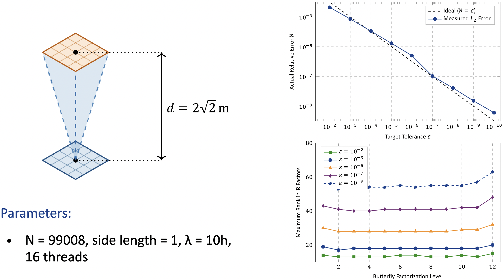
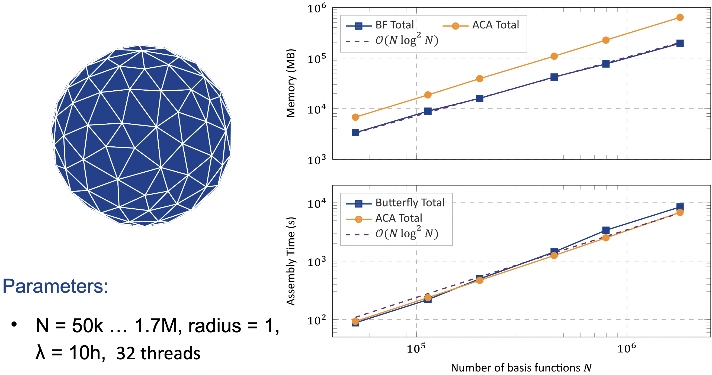
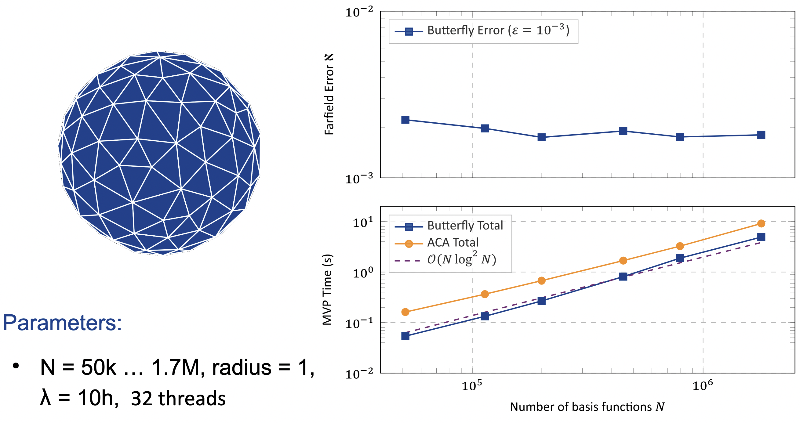
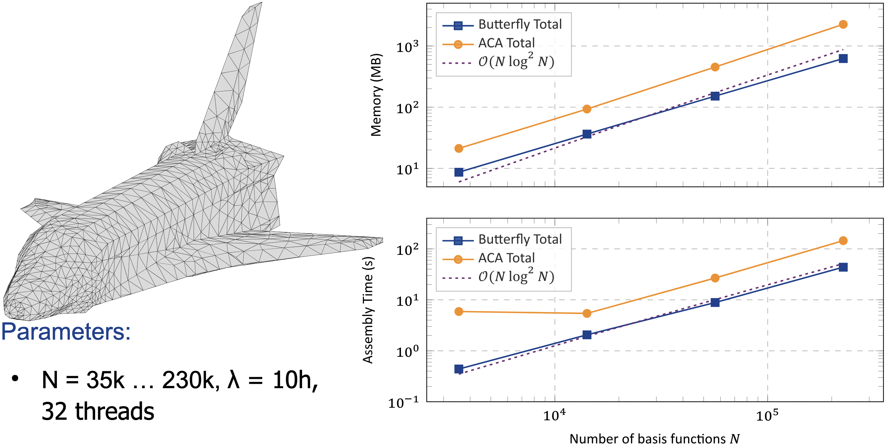

Performance Benchmarks
The ButterflyFactorizations.jl package has been tested against large-scale electromagnetic scattering problems to validate its theoretical complexity bounds, error control, and parallel efficiency. The scripts are provided in the evaluation archive.
1. Rank Boundedness and Error Control (Parallel Plates)
The core mechanism of Butterfly Factorization is that the interaction rank remains bounded across hierarchical levels, which was validated using two parallel plates separated by $d = 2\sqrt{2}\text{ m}$.
- Configuration: $N = 99{,}008$, side length $= 1$, $\lambda = 10h$, utilizing 16 threads.
- Strict Error Tracking: The measured relative $L_2$ error strictly tracks the ideal target tolerance $\varepsilon$ perfectly down to $\varepsilon = 10^{-10}$.
- Bounded Ranks: Across 12 butterfly factorization levels, the maximum rank in the $\mathcal{R}$ factors remains entirely bounded, peaking around 60 for an extreme tolerance of $\varepsilon = 10^{-9}$, and remaining under 20 for $\varepsilon = 10^{-3}$.

2. High-Frequency Scaling: Butterfly vs. ACA (PEC Sphere)
In high-frequency regimes, classical low-rank approximations like Adaptive Cross Approximation (ACA) lose their efficiency. The following benchmarks demonstrate the superior scaling of Butterfly Factorization on a PEC Sphere.
- Configuration: PEC Sphere scattering, varying from $N = 50{,}000$ to $N = 1{,}700{,}000$ degrees of freedom, radius $= 1$, $\lambda = 10h$, utilizing 32 threads.
- Complexity Advantage (Memory & Assembly): Butterfly Factorization achieves robust $\mathcal{O}(N \log^2 N)$ scaling for total memory consumption and assembly time. In direct comparisons, ACA exhibits significantly worse asymptotic scaling across these metrics as $N$ increases.

- MVP Scaling & Error Stability: Matrix-vector product (MVP) times also scale at $\mathcal{O}(N \log^2 N)$, significantly outperforming ACA at scale. Furthermore, the far-field error remains completely stable around the requested $\varepsilon = 10^{-3}$ tolerance regardless of how large the problem size grows.

3. Complex Geometries (Space Shuttle)
The package also maintains its $\mathcal{O}(N \log^2 N)$ memory and assembly time complexity scaling on complex real-world geometries, such as a Space Shuttle.
- Configuration: Space Shuttle mesh, varying from $N = 35{,}000$ to $230{,}000$ degrees of freedom, $\lambda = 10h$, utilizing 32 threads.
- Robust Performance: Validations confirm that the factorization scales efficiently regardless of surface irregularities, sharp edges, and complex mesh topologies.
